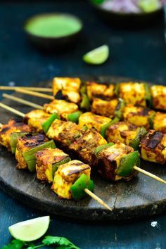

Paneer Tikka
Paneer tikka is a delicious starter made with paneer marinated in a Achari marinade. Here is a tried and tested recipe to make Achari Paneer Tikka.

Ingredients
- Add hung curd
- Ginger garlic paste
- Garam masala
- Lemon juice
- Kashmiri red chilli powder
- Garam masala
Method
- Add in the paneer cubes and coat the paneer nicely in the marinade.
- Cover the bowl and keep aside for an hour.
- Thread the marinated paneer and capsicum pieces in wooden skewers.
- Heat a charcoal grill and apply little oil on the paneer.
- Grill the paneer skewers from both the sides applying little oil till nicely browned.
- Serve hot with mint yogurt dip.